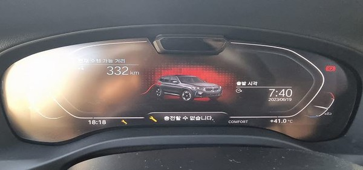
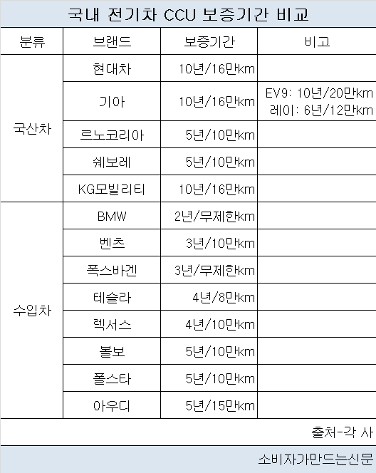

전기차 핵심 부품 CCU 결함 잇따르는데...현대차·기아 10년 보증, BMW는 달랑 2년
최근 전기차 주요 부품 중 하나인 CCU(통합충전장치) 관련 결함 사례가 잇따르는 가운데 제조사별로 보증기간 차이가 큰 것으로 나타났다. 현대차·기아는 10년 보증을 제공하는 반면 BMW는 2년에 불과해 가장 짧았다.
CCU는 배터리 충전 등 전력을 제어하는 부품으로 전기차에서 핵심적인 역할을 담당한다.
여러 제조사서 결함 이슈가 이어져 보증기간 확대에 대한 목소리가 높아지고 있다.
최근 아우디는 CCU 불량으로 고전압 충전 시 배터리 모듈의 셀 사이에 편차가 발생하는 문제로
Q4 e-tron 40, Q4 스포트백 e-tron 40 등 두 개 차종에 대해 무상수리를 결정했다.
앞서 현대차·기아는 주행 중 동력상실 의심을 받는 아이오닉5·6, EV6 등 6개 차종에 대해
ICCU 관련 무상수리에 들어간 것으로 알려졌다. BMW도 i4 eDrive40 등
4개 차종의 CCU 회로 기판 손상으로 인해 충전이 중단되거나 주행 도중 차량이 멈추는 문제에 대해 리콜을 실시했다.

이 때문에 전기차 차주들 사이에서 CCU 부품 보증기간을 확대해야 한다는 목소리가 나오고 있다.
27일 국내외 13개 자동차 브랜드를 조사한 결과 CCU 부품에 대해 평균적으로 5년/12만km의 보증기간을 적용하고 있다.
현대차·기아, KG모빌리티가 10년/16만km로 가장 긴 보증 기간을 두고 있다.
현대차·기아는 CCU에 차량 배터리 전력으로 전자제품을 사용할 수 있는 V2L 기능을
추가한 ICCU 부품에 대해 승용차 대상으로 10년/16만km 보증을 제공한다.
또 ICCU와 고전압 배터리, 구동모터, 감속기 등을 EV부품으로 분류하고 일반 차량보다 더 긴 보증기간을 제공한다.
특히 기아의 대형 전기 SUV 'EV9'은 10년/20만km 보증을 제공한다.
현대차·기아 관계자는 "전기차 고객에게 더 많은 혜택을 제공하고자 전기차 전용 부품에 넉넉한 보증기간을 제공하고 있다"고 전했다.
KG모빌리티도 코란도 이모션의 CCU와 같은 전기차 전용 부품에 10년/16만km 보증이 제공된다.
한국GM의 쉐보레 볼트 EV·EUV는 CCU를 비롯한 전기차 부품과 차체에 5년/10만km 보증을 제공한다.

반면 수입차 브랜드 중 BMW는 CCU 보증기간이 2년/무제한km로 가장 짧았다.
전기차의 '동력 전달계통 주요부품'에 대해서는 3년/6만km를 제공하나 CCU는 '차체 및 일반 부품'으로 분류되기 때문이다.
CCU에 일반 부품과 동일한 보증기간을 적용하는 것은 벤츠·렉서스·폴스타·테슬라 등 다른 브랜드도 동일하다.
다만 보증기간은 3~5년으로 BMW에 비해 길다.
일부 BMW 차주들 사이에서 불만의 목소리가 터져 나오고 있다.
전기차 커뮤니티의 한 유저(닉네임: 곰XXXX)는 "BMW의 CCU 관련 보증기간이 2년밖에
안 된다는 부분이 걸려 다른 브랜드로 돌아섰다"며 "보증기간이 더 긴 브랜드는 그만큼 품질에 자신 있다는 것으로 보인다"고 전했다.
BMW 측은 "어떤 부품에 어떤 보증 기준을 적용할지는 브랜드마다 차이가 있을 수밖에 없는 부분"이라며
보증기간 연장에 대해서는 "아직 확정된 사안은 없다"고 전했다.
소비자주권시민회의 관계자는 "최근 통합충전장치 문제가 지속적으로 발생하는 만큼 해당 부품을
핵심부품으로 지정하고 보증기간 연장 조치에 시급히 나서야 한다"며 "BMW 코리아는 CCU가
탑재된 모든 차종에 대해 철저한 원인 규명 및 대책 마련을 해야 한다"고 밝혔다.
전문가들 사이에서는 한발 더 나아가 전기차 관련 부품에 대한 AS 보증기간을 확대해야 한다는 목소리가 높아지고 있다.
김필수 대림대 미래자동차학부 교수는 "현재는 전기차 시장이 초기 단계다 보니 배터리,
모터를 비롯한 전기차 부품의 안전성과 신뢰성에 대해 소비자들의 불안감이 높은 상황"이라며
"국산차는 물론 수입차 브랜드도 전기차 핵심 부품의 AS 보증기간을 확대해야 소비자들에게 신뢰를 가져다줄 수 있을 것"이라고 밝혔다.